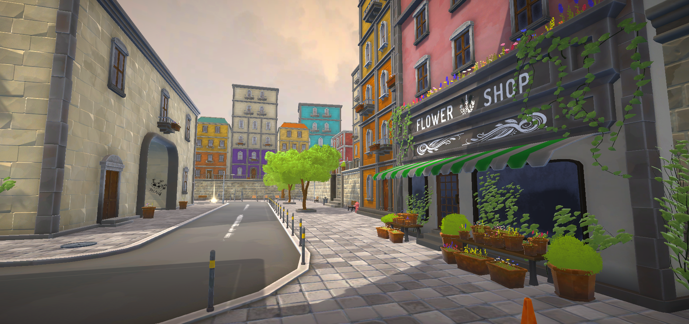
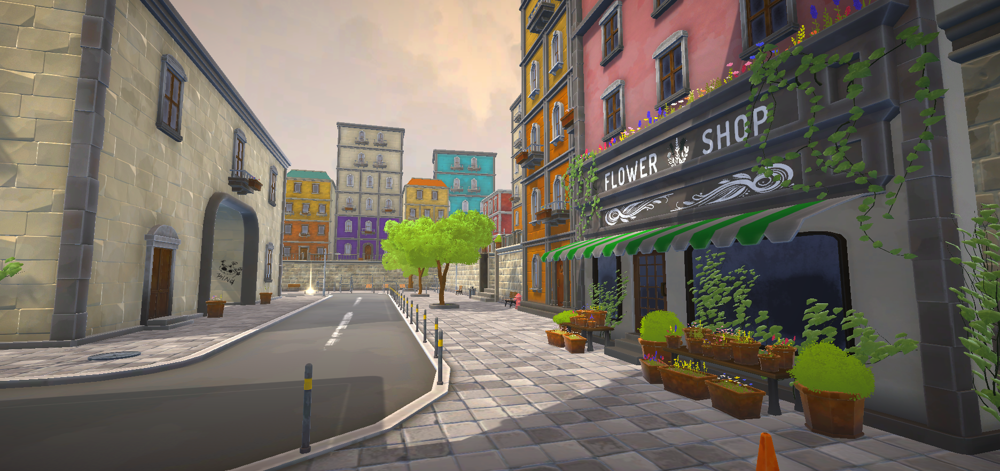

City Game
Project introduction
City Game is a fast-paced arcade FPS where the player faces waves of robots in a colorful and futuristic universe. Designed as a dynamic solo experience, the project focuses on fluid gameplay, simple yet effective mechanics, and a tight rhythm that keeps the player constantly on edge.
My Role
I was responsible for the entire development of the game, designing and programming all the gameplay mechanics. I also worked on the game design, defining the rules, pacing, and wave balancing to deliver a smooth and dynamic arcade experience.
Gameplay mechanics
Player Movement :
Fast and fluid third-person controls designed for an arcade and responsive gameplay experience.
Shooting System :
A simple but dynamic shooting mechanic, requiring players to manage their ammo to keep the action flowing.
Reload System :
Ammunition is tied to “balloon pickups” placed around the map, forcing the player to move and strategize to stay supplied.
Smart Enemy Spawning :
Enemies spawn through a predictive system that validates distances and positions to ensure balance and tension.
Enemy AI :
Ground robots patrol, detect the player within a vision cone, and attack when alerted. Flying robots share the same detection and attack logic but use a custom navigation system adapted for aerial movement.
Scoring System :
Tracks kills, combos, and wave progression to reward efficient play and maintain an arcade rhythm.
Debugging & Optimization :
Development included extensive debugging and optimizations using pooling and a wave manager to ensure smooth performance even with multiple enemies.
Tools and Technologies
Unity : Main game engine, used to integrate VR features and create gameplay
interactions.
C# : For programming the gameplay mechanics.
Drive : For file sharing.
Discord : Team communication to coordinate the technical and creative aspects of the
project.
Github : Version control platform used to manage and collaborate on the project's
codebase, allowing team members to track changes, fix issues, and ensure code stability throughout
development.
 
